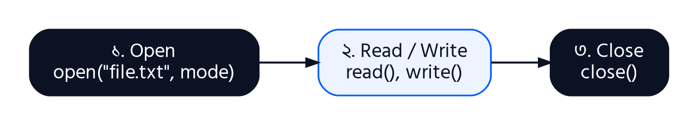

অধ্যায় ২
File Operation in Python
এতক্ষণ যত program লিখেছি, সবগুলোর একটা বড় সমস্যা আছে: program বন্ধ হলেই সব data হারিয়ে যায়। একশো ছাত্রের মার্কস input দিলে, program শেষ হওয়া মাত্র সব শেষ — পরের দিন আবার প্রথম থেকে input দিতে হবে। কারণ variable-এর data থাকে RAM-এ, যা অস্থায়ী।
Data স্থায়ীভাবে রাখতে হলে সেটা hard disk বা SSD-তে file আকারে লিখতে হয়। এই অধ্যায়ে শিখব Python দিয়ে file খোলা, পড়া, লেখা আর বন্ধ করা — আর শেষে file ব্যবহার করে পূর্ণ কয়েকটা program।
2.1 File Operation কী?
File-এর প্রকারভেদ
| ধরন | কী থাকে | উদাহরণ |
|---|---|---|
| Text file | মানুষ পড়তে পারে এমন লেখা, লাইন আকারে | .txt, .csv, .py, .html |
| Binary file | 0 আর 1-এর আকারে data, সরাসরি পড়া যায় না | .jpg, .mp3, .pdf, .exe |
File Operation-এর তিনটি ধাপ

Python-এ file-এর নাম দেওয়ার দুই উপায়: relative path (যেমন "marks.txt" — program যে folder-এ চলছে সেখানে খোঁজে) আর absolute path (যেমন "D:/data/marks.txt" — পুরো ঠিকানা)। এই অধ্যায়ের সব উদাহরণে relative path ব্যবহার করা হয়েছে।
2.2 File খোলার Mode
File খোলার সময় বলে দিতে হয় file-টা দিয়ে কী করবে। একে বলে mode। ভুল mode দিলে হয় error আসবে, নয়তো আরও খারাপ — আগের data মুছে যাবে।
| Mode | অর্থ | File না থাকলে | File থাকলে |
|---|---|---|---|
| r | শুধু পড়া (default) | FileNotFoundError | শুরু থেকে পড়ে |
| w | লেখা | নতুন file তৈরি | আগের সব লেখা মুছে নতুন করে লেখে |
| a | শেষে যোগ (append) | নতুন file তৈরি | আগের লেখা রেখে শেষে যোগ করে |
| x | শুধু নতুন file তৈরি | নতুন file তৈরি | FileExistsError |
| r+ | পড়া ও লেখা | FileNotFoundError | শুরু থেকে পড়ে ও লেখে |
| w+ | লেখা ও পড়া | নতুন file তৈরি | আগের সব মুছে দেয় |
| a+ | যোগ ও পড়া | নতুন file তৈরি | লেখা সবসময় শেষে যোগ হয় |
এর সাথে t (text, default) বা b (binary) যোগ করা যায়: যেমন "rb" মানে binary file পড়া (ছবি, PDF), "wb" মানে binary file লেখা।
উদাহরণ 2.1w আর a mode-এর পার্থক্য
সমস্যা: একই file-এ প্রথমে w mode-এ দুবার লেখো, তারপর a mode-এ লেখো — প্রতিবার file-এ কী থাকে দেখো।
1f = open("notice.txt", "w")
2f.write("Class starts at 9 AM\n")
3f.close()
4
5f = open("notice.txt", "w")
6f.write("Class starts at 10 AM\n")
7f.close()
8print(open("notice.txt").read())
9
10f = open("notice.txt", "a")
11f.write("Lab on Thursday\n")
12f.close()
13print(open("notice.txt").read())
Class starts at 10 AM Class starts at 10 AM Lab on Thursday
লাইন-বাই-লাইন ব্যাখ্যা
| 1–3 | f = open("notice.txt", "w")
f.write("Class starts at 9 AM\n")
f.close() | notice.txt তৈরি হলো, একটা লাইন লেখা হলো। \n মানে নতুন লাইন — write() নিজে থেকে লাইন ভাঙে না। |
| 5–7 | f = open("notice.txt", "w")
f.write("Class starts at 10 AM\n")
f.close() | আবার w mode — আগের "9 AM" লাইন মুছে গেল, শুধু নতুন লাইন রইল। |
| 8 | print(open("notice.txt").read()) | file পড়ে দেখালাম: শুধু "10 AM"। |
| 10–12 | f = open("notice.txt", "a")
f.write("Lab on Thursday\n")
f.close() | a mode — আগের লেখা অক্ষত রেখে শেষে নতুন লাইন যোগ হলো। |
উদাহরণ 2.2ভুল mode-এ যা ঘটে
সমস্যা: নেই এমন file r mode-এ আর আছে এমন file x mode-এ খোলার চেষ্টা করো।
1try:
2 open("missing.txt", "r")
3except FileNotFoundError:
4 print("r mode: file does not exist")
5
6try:
7 open("notice.txt", "x")
8except FileExistsError:
9 print("x mode: file already exists")
r mode: file does not exist x mode: file already exists
লাইন-বাই-লাইন ব্যাখ্যা
| 1–4 | try:
open("missing.txt", "r")
except FileNotFoundError:
print("r mode: file does not exist") | try-except দিয়ে error ধরলাম, যাতে program বন্ধ না হয়ে বার্তা দেখায়। try-এর ভেতরে error হলে সংশ্লিষ্ট except-এ চলে আসে। |
| 6–9 | try:
open("notice.txt", "x")
except FileExistsError:
print("x mode: file already exists") | x mode ব্যবহার হয় যখন নিশ্চিত হতে চাও যে ভুল করে পুরনো file-এর উপর লিখছ না। |
2.3 File খোলা ও বন্ধ করার Function
open() ও close()
Syntax
file_object = open(file_name, mode, encoding="utf-8")
# file নিয়ে কাজ
file_object.close()
open() একটা file object return করে — এর মাধ্যমেই পড়া-লেখা হয়। encoding="utf-8" দিলে বাংলাসহ যেকোনো ভাষার লেখা ঠিকমতো সংরক্ষণ হয়।
close() কেন জরুরি? write() দিয়ে লেখা data সাথে সাথে disk-এ যায় না, প্রথমে memory-র একটা অস্থায়ী জায়গায় (buffer) জমা থাকে। close() ডাকলে তবেই সব data নিশ্চিতভাবে disk-এ লেখা হয় এবং file-টা অন্য program-এর জন্য মুক্ত হয়। close() ভুলে গেলে শেষের কিছু data হারিয়ে যেতে পারে।
উদাহরণ 2.3open, close ও file object
সমস্যা: একটা file খুলে তার তথ্য দেখো, close করো, তারপর বন্ধ file-এ লেখার চেষ্টা করো।
1f = open("demo.txt", "w", encoding="utf-8")
2print("Name :", f.name)
3print("Mode :", f.mode)
4print("Closed:", f.closed)
5f.write("Hello file")
6f.close()
7print("Closed:", f.closed)
8f.write("More text")
Name : demo.txt Mode : w Closed: False Closed: True Traceback (most recent call last): ... ValueError: I/O operation on closed file.
লাইন-বাই-লাইন ব্যাখ্যা
| 2–4 | print("Name :", f.name)
print("Mode :", f.mode)
print("Closed:", f.closed) | file object-এর কিছু attribute: name, mode, আর closed (বন্ধ কিনা)। |
| 6–7 | f.close()
print("Closed:", f.closed) | close()-এর পর closed = True। |
| 8 | f.write("More text") | বন্ধ file-এ লেখার চেষ্টা — ValueError। |
with Statement: স্বয়ংক্রিয় close
close() লিখতে ভুলে যাওয়া খুব সাধারণ, আর মাঝখানে error হলে close() পর্যন্ত পৌঁছানোই হয় না। তাই Python-এ file খোলার সবচেয়ে ভালো উপায় হলো with statement — block শেষ হলে Python নিজেই file বন্ধ করে দেয়, error হলেও।
Syntax
with open(file_name, mode) as f:
# f দিয়ে কাজ
# এখানে আসার আগেই file নিজে বন্ধ হয়ে গেছে
1with open("demo.txt", "w") as f:
2 f.write("Written using with\n")
3 print("Inside with, closed?", f.closed)
4
5print("After with, closed? ", f.closed)
Inside with, closed? False After with, closed? True
লাইন-বাই-লাইন ব্যাখ্যা
| 1 | with open("demo.txt", "w") as f: | as f মানে open() যে file object দিল তার নাম f। |
| 3 | print("Inside with, closed?", f.closed) | block-এর ভেতরে file খোলা। |
| 5 | print("After with, closed? ", f.closed) | block থেকে বের হতেই file বন্ধ — আমরা close() লিখিনি। |
2.4 File পড়া ও লেখার Function
| Function | কাজ |
|---|---|
| write(string) | একটা string লেখে; লেখা character-এর সংখ্যা return করে |
| writelines(list) | string-এর list একবারে লেখে (নিজে থেকে \n বসায় না) |
| read() | পুরো file একটা string হিসেবে পড়ে |
| read(n) | প্রথম n টা character পড়ে |
| readline() | একবারে একটা লাইন পড়ে (\n সহ) |
| readlines() | সব লাইন একটা list হিসেবে পড়ে |
| for line in f | লাইন ধরে ধরে পড়ার সবচেয়ে সহজ ও memory-সাশ্রয়ী উপায় |
উদাহরণ 2.4লেখার Function
সমস্যা: write() আর writelines() দিয়ে একটা ছাত্র তালিকা file-এ লেখো।
1with open("students.txt", "w") as f:
2 count = f.write("Rahim,101,78\n")
3 print("Characters written:", count)
4 f.write("Sumaiya,102,91\n")
5 rows = ["Karim,103,35\n", "Tanvir,104,66\n", "Nusrat,105,84\n"]
6 f.writelines(rows)
7print("File saved.")
Characters written: 13 File saved.
লাইন-বাই-লাইন ব্যাখ্যা
| 1 | with open("students.txt", "w") as f: | প্রতিটা লাইনে নাম, রোল, মার্কস comma দিয়ে আলাদা — এই ধরনটাকে CSV (Comma Separated Values) বলে। Excel-ও এভাবে data খুলতে পারে। |
| 2 | count = f.write("Rahim,101,78\n") | write() লেখা character-এর সংখ্যা return করে — এখানে 13 (\n-ও একটা character)। |
| 5–6 | rows = ["Karim,103,35\n", "Tanvir,104,66\n", "Nusrat,105,84\n"]
f.writelines(rows) | writelines() পুরো list একবারে লেখে। প্রতিটা string-এর শেষে \n নিজেকেই দিতে হয়েছে। |
Rahim,101,78
Sumaiya,102,91
Karim,103,35
Tanvir,104,66
Nusrat,105,84
উপরে দেখানো হলো file-টার ভেতরে এখন কী আছে। এবার এটা চারভাবে পড়ি।
উদাহরণ 2.5পড়ার Function
সমস্যা: students.txt file-টা read(), read(n), readline(), readlines() আর for loop দিয়ে পড়ো।
1with open("students.txt") as f:
2 print(repr(f.read(10)))
3 print(repr(f.readline()))
4 print(repr(f.readline()))
5
6with open("students.txt") as f:
7 lines = f.readlines()
8print(lines[:2])
9print("Total lines:", len(lines))
10
11with open("students.txt") as f:
12 for line in f:
13 name, roll, marks = line.strip().split(",")
14 print(f"{roll}: {name:<8} {marks}")
'Rahim,101,' '78\n' 'Sumaiya,102,91\n' ['Rahim,101,78\n', 'Sumaiya,102,91\n'] Total lines: 5 101: Rahim 78 102: Sumaiya 91 103: Karim 35 104: Tanvir 66 105: Nusrat 84
লাইন-বাই-লাইন ব্যাখ্যা
| 2 | print(repr(f.read(10))) | প্রথম 10টা character। repr() দেখায় লেখাটা ঠিক কেমন, \n সহ। |
| 3 | print(repr(f.readline())) | read(10)-এর পর থেকে লাইনের বাকি অংশ। File object মনে রাখে কোথা পর্যন্ত পড়া হয়েছে — অনেকটা বইয়ের বুকমার্কের মতো। |
| 4 | print(repr(f.readline())) | পরের পুরো লাইন। |
| 6–9 | with open("students.txt") as f:
lines = f.readlines()
print(lines[:2])
print("Total lines:", len(lines)) | readlines() সব লাইন list হিসেবে দেয়; প্রতিটার শেষে \n থাকে। |
| 11–14 | with open("students.txt") as f:
for line in f:
name, roll, marks = line.strip().split(",")
print(f"{roll}: {name:<8} {marks}") | for loop-এ file সরাসরি দিলে লাইন ধরে পড়ে। strip() শেষের \n সরায়, split(",") comma দিয়ে ভেঙে list বানায়, তারপর তিনটা মান তিনটা variable-এ। |
2.5 File Input ও Output দিয়ে Program
উদাহরণ 2.6Student Result File
সমস্যা: students.txt থেকে প্রত্যেক ছাত্রের মার্কস পড়ে পাস/ফেল ঠিক করো, ফলাফল result.txt-এ লেখো এবং ক্লাসের গড় দেখাও।
1def process_results(infile, outfile):
2 total, count = 0, 0
3 with open(infile) as fin, open(outfile, "w") as fout:
4 fout.write("Roll,Name,Marks,Result\n")
5 for line in fin:
6 name, roll, marks = line.strip().split(",")
7 marks = int(marks)
8 result = "Pass" if marks >= 40 else "Fail"
9 fout.write(f"{roll},{name},{marks},{result}\n")
10 total += marks
11 count += 1
12 return total / count
13
14avg = process_results("students.txt", "result.txt")
15print("Class average:", round(avg, 2))
16print(open("result.txt").read())
Class average: 70.8 Roll,Name,Marks,Result 101,Rahim,78,Pass 102,Sumaiya,91,Pass 103,Karim,35,Fail 104,Tanvir,66,Pass 105,Nusrat,84,Pass
লাইন-বাই-লাইন ব্যাখ্যা
| 3 | with open(infile) as fin, open(outfile, "w") as fout: | একটা with-এ দুটো file একসাথে খোলা যায় — একটা পড়ার, একটা লেখার। |
| 4 | fout.write("Roll,Name,Marks,Result\n") | result.txt-এর প্রথম লাইনে কলামের নাম (header)। |
| 6–7 | name, roll, marks = line.strip().split(",")
marks = int(marks) | লাইন ভেঙে তিনটা মান; মার্কস string থেকে int-এ। |
| 9–11 | fout.write(f"{roll},{name},{marks},{result}\n")
total += marks
count += 1 | ফলাফল লেখা এবং গড়ের জন্য যোগফল ও সংখ্যা জমানো। |
| 13 | with block শেষ হওয়ায় দুটো file-ই বন্ধ, তারপর গড় return। |
উদাহরণ 2.7File-এর Line, Word ও Character গণনা
সমস্যা: যেকোনো text file-এ কতগুলো লাইন, শব্দ আর character আছে বের করার function লেখো।
1def file_stats(filename):
2 lines = words = chars = 0
3 with open(filename) as f:
4 for line in f:
5 lines += 1
6 words += len(line.split())
7 chars += len(line)
8 return lines, words, chars
9
10with open("poem.txt", "w") as f:
11 f.write("Twinkle twinkle little star\n")
12 f.write("How I wonder what you are\n")
13
14l, w, c = file_stats("poem.txt")
15print(f"Lines: {l}, Words: {w}, Characters: {c}")
Lines: 2, Words: 10, Characters: 54
লাইন-বাই-লাইন ব্যাখ্যা
| 2 | lines = words = chars = 0 | তিনটা counter একসাথে 0। |
| 6 | words += len(line.split()) | split() কোনো argument ছাড়া space দিয়ে ভাগ করে, তাই শব্দের সংখ্যা পাওয়া যায়। |
| 7 | chars += len(line) | \n-ও character হিসেবে গোনা হচ্ছে। |
উদাহরণ 2.8তারিখসহ Log File
সমস্যা: প্রতিবার কোনো ঘটনা ঘটলে তারিখ-সময়সহ একটা লাইন log.txt-এ যোগ করো (a mode আর অধ্যায় ১-এর datetime একসাথে)।
1from datetime import datetime
2
3def log_event(message, when=None):
4 when = when or datetime.now()
5 with open("log.txt", "a") as f:
6 f.write(f"[{when.strftime('%d-%m-%Y %H:%M')}] {message}\n")
7
8log_event("Rahim logged in", datetime(2026, 10, 5, 9, 15))
9log_event("Result published", datetime(2026, 10, 5, 11, 40))
10log_event("Rahim logged out", datetime(2026, 10, 5, 12, 5))
11
12with open("log.txt") as f:
13 print(f.read())
[05-10-2026 09:15] Rahim logged in [05-10-2026 11:40] Result published [05-10-2026 12:05] Rahim logged out
লাইন-বাই-লাইন ব্যাখ্যা
| 4 | when = when or datetime.now() | when দেওয়া না হলে বর্তমান সময়। x or y মানে x ফাঁকা (None) হলে y নাও। |
| 5–6 | with open("log.txt", "a") as f:
f.write(f"[{when.strftime('%d-%m-%Y %H:%M')}] {message}\n") | a mode তাই প্রতিবার নতুন লাইন শেষে যোগ হয়, পুরনো log হারায় না। |
| 8–10 | log_event("Rahim logged in", datetime(2026, 10, 5, 9, 15))
log_event("Result published", datetime(2026, 10, 5, 11, 40))
log_event("Rahim logged out", datetime(2026, 10, 5, 12, 5)) | উদাহরণে নির্দিষ্ট সময় পাঠানো হয়েছে যাতে output সবসময় একই থাকে; বাস্তবে শুধু log_event("...") লিখবে। |
অধ্যায়ের সারসংক্ষেপ
| বিষয় | মূল কথা |
|---|---|
| File operation | File তৈরি, খোলা, পড়া, লেখা, যোগ ও বন্ধ করা; ধাপ: open → read/write → close। |
| Mode | r পড়া, w নতুন করে লেখা (আগের মুছে), a শেষে যোগ, x শুধু নতুন file; b binary, t text। |
| open/close | open() file object দেয়; close() data নিশ্চিতভাবে disk-এ লেখে; with নিজে থেকে বন্ধ করে। |
| লেখা | write() একটা string, writelines() string-এর list; \n নিজে দিতে হয়; শুধু string লেখা যায়। |
| পড়া | read(), read(n), readline(), readlines(), for line in f; পড়া data সবসময় string। |
অনুশীলনী · অধ্যায় ২ (বোর্ড প্রশ্ন ও উত্তর)
অনুশীলনী ও বোর্ড প্রশ্নের উত্তর লক করা
এই অংশ শুধু বইয়ের PDF ক্রেতাদের জন্য। PDF কিনলে একটা আনলক কোড পাবে — কোডটা এখানে দিলেই পুরো বইয়ের সব অনুশীলনী আর বোর্ড প্রশ্নের উত্তর খুলে যাবে, প্রতিবার আর দিতে হবে না।
PDF কিনতে Facebook-এ মেসেজ দাও: facebook.com/kazitauhidrana ↗
এই অধ্যায় কেমন লাগল?
তোমার মতামত সরাসরি লেখকের কাছে যাবে। ভুল পেলে কোন section-এ, সেটাও লিখে দিও।